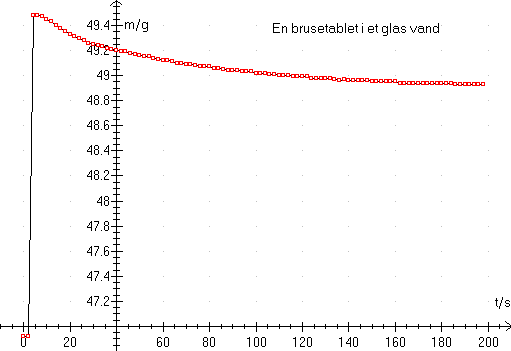

Se kursus 3: Idotol (måling og databehandling)

De fleste vægte har 2 indstillinger: »hurtig vejning« og »stabil vejning«. I første tilfælde svarer vægten med det samme. I det andet tilfælde svarer vægten først, når vejningen er stabil. I Datalyse sættes mindste tid til 2 sekunder for hurtig vejning og 10 sekunder for stabil vejning.
Der er fordele og ulemper ved hver vægt, sådan er det med alle apparater. Se beskrivelsen under det enkelte apparat. Man med fordel kan benytte vægten sammen med et andet apparat, fx til Laplaces lov (vægt + multimeter).